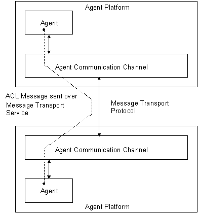
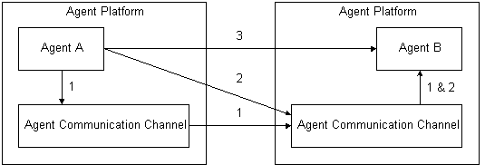

FOUNDATION FOR INTELLIGENT PHYSICAL AGENTS
FIPA Agent Message Transport
Specification
|
Document title |
FIPA Agent Message Transport Specification |
||
|
Document number |
OC00024D |
Document source |
FIPA TC B |
|
Document status |
Obsolete |
Date of this status |
2001/08/10 |
|
Supersedes |
None |
||
|
Contact |
fab@fipa.org |
||
|
Change history |
|||
|
2000/04/11 |
Made obsolete by FIPA00067 |
||
|
2001/08/10 |
Line numbering added |
||
© 2000 Foundation for Intelligent Physical Agents - http://www.fipa.org/
Geneva, Switzerland
|
Notice |
|
Use of the technologies described in this specification may infringe patents, copyrights or other intellectual property rights of FIPA Members and non-members. Nothing in this specification should be construed as granting permission to use any of the technologies described. Anyone planning to make use of technology covered by the intellectual property rights of others should first obtain permission from the holder(s) of the rights. FIPA strongly encourages anyone implementing any part of this specification to determine first whether part(s) sought to be implemented are covered by the intellectual property of others, and, if so, to obtain appropriate licenses or other permission from the holder(s) of such intellectual property prior to implementation. This specification is subject to change without notice. Neither FIPA nor any of its Members accept any responsibility whatsoever for damages or liability, direct or consequential, which may result from the use of this specification. |
Foreword
The Foundation for Intelligent Physical Agents (FIPA) is an international organization that is dedicated to promoting the industry of intelligent agents by openly developing specifications supporting interoperability among agents and agent-based applications. This occurs through open collaboration among its member organizations, which are companies and universities that are active in the field of agents. FIPA makes the results of its activities available to all interested parties and intends to contribute its results to the appropriate formal standards bodies.
The members of FIPA are individually and collectively committed to open competition in the development of agent-based applications, services and equipment. Membership in FIPA is open to any corporation and individual firm, partnership, governmental body or international organization without restriction. In particular, members are not bound to implement or use specific agent-based standards, recommendations and FIPA specifications by virtue of their participation in FIPA.
The FIPA specifications are developed through direct involvement of the FIPA membership. The status of a specification can be either Preliminary, Experimental, Standard, Deprecated or Obsolete.More detail about the process of specification may be found in the FIPA Procedures for Technical Work. A complete overview of the FIPA specifications and their current status may be found in the FIPA List of Specifications. A list of terms and abbreviations used in the FIPA specifications may be found in the FIPA Glossary.
FIPA is a non-profit association registered in Geneva, Switzerland. As of January 2000, the 56 members of FIPA represented 17countries worldwide. Further information about FIPA as an organization, membership information, FIPA specifications and upcoming meetings may be found at http://www.fipa.org/.
Contents
3 Agent Message Transport Reference Model
4.1 Expressing Message Transport Information
4.1.1 Abstract Message Envelope Syntax
4.1.2 Message Envelope Slot Semantics
4.1.3 Updating Message Envelope Slot Information
4.1.4 Additional Message Envelope Slots
4.2 Agent Identifiers and Transport Addresses
4.3 Message Transport Functions of the ACC
4.3.1 Interfaces to the Message Transport Service
4.3.2 Agent Communication Channel Message Handling Behaviour
4.3.3 Error and Confirmation Messages
4.4 Using the Message Transport Service
4.5 Querying Message Transport Service Polices and Capabilities
4.5.1 Agent Platform Transport Descriptions
4.5.2 Minimal Transport Requirements for FIPA Interoperability
6.1 Message Transport Protocol for IIOP: fipa-iiop-std
6.1.2 Concrete Message Envelope Syntax
6.2 Message Transport Protocol for Wireless Networks: fipa-wap-std
6.2.1 Concrete Message Envelope Syntax
7 Representations of ACL Messages
7.1 String Representation: fipa-string-std
7.1.4 Notes on the Grammar Rules
7.2 Bit-Efficient Representation: fipa-bitefficient-std
7.2.2 Using Dynamic Code Tables
7.2.3 Notes on the Grammar Rules
7.3 XML Representation: fipa-xml-std
9 Normative Annex A: Concrete Message Envelope Syntax
This document is part of the FIPA specifications and deals with message transportation between inter-operating agents. This document also forms part of the FIPA Agent Management specification and contains specifications for agent message transport, including:
· A reference model for an agent Message Transport Service.
· Definitions for the expression of message transport information to an agent Message Transport Service.
· Definitions of Agent Message Transport Protocols for transportation of messages between agents.
· Specifications of syntactic representations of ACL.
· ”FIPA Agent Management” [FIPA00023].
· ”FIPA Agent Communication Language” [FIPA00061].
· ”FIPA Communicative Acts” [FIPA00037].
· ”FIPA Content Languages” [FIPA00007].
· ”FIPA SL Content Language” [FIPA00008].
· Internet Inter-ORB Protocol (IIOP): Common Object Request Broker Architecture Version 2.2.
The FIPA Message Transport Model (MTM) comprises three levels (see Figure 1):
1. The Message Transport Protocol (MTP) is used to carry out the physical transfer of messages between two ACCs.
2. The Message Transport Service is a service provided by the AP to which an agent is attached. The MTS supports the transportation of FIPA ACL messages between agents on any given AP and between agents on different APs. The MTS is provided by the ACC.
3. The ACL represents the content of the messages carried by both the MTS and MTP.

Figure 1: Overview of the Message Transport Model
In its abstract form, a message is made up of two parts: a message envelope expressing transport information and the message body comprising the ACL message of the agent communication.
For the purposes of message interpretation by an agent:
· ACL semantics are defined only over the ACL message delivered in the message body of a FIPA message (see [FIPA00023]).
· All information in the message envelope is supporting information only. How and if this information is used to by an agent for any kind of additional inference is undefined by FIPA.
The Message Transport Service (MTS) provides a mechanism for the transfer of FIPA ACL messages between agents. The agents involved may be local to a single AP or on different APs. On any given AP, the MTS is provided by an ACC.[BB1]
Information relating to the delivery and transportation of messages can be specified in the message envelope of a message.
The syntax described here is an abstract representation. Any MTP may use a different internal representation, but must express the same terms, represent the same semantics and perform the corresponding actions. See Section 0, Normative Annex A: Concrete Message Envelope Syntax for the lexical and syntactical representation of a message envelope for the FIPA baseline MTP.
The following are general statements about the form of a message envelope:
· A message envelope comprises a collection of slots.
· A slot is a name/value pair.
· A message envelope contains at least the mandatory to, from, dateandacl-representation slots.
· A message envelope can contain optional slots.
Each ACC handling a message may add new information to the message envelope, but it may never overwrite existing information. ACCs can add new slots to a message envelope which override existing slots that have the same slot name; the mechanism for disambiguating message envelope entries in this case is specified by each concrete message envelope syntax.
The following terms are used to identify the ontology of the agent message transport objects:
· Frame. This is the name of this entity.
· Ontology. This is the name of the ontology, whose domain of discourse includes the slots described in the table.
· Slot. This identifies each component within the frame.
· Description. This is a natural language description of the semantics of each slot.
· Presence. This indicates whether each slot is mandatory or optional.
· Type. This indicates the type of each slot: Integer, String, Word, URL, Set, Sequence, Term or other object description.
· Reserved Values. This is a list of FIPA-defined constants associated with each slot.
|
Frame Ontology |
envelope fipa-agent-management |
|
||
|
Slot |
Description |
Presence |
Type |
Reserved Values |
|
to |
This contains the names of the primary recipients of the message. |
Mandatory |
Sequence of agent-identifier |
|
|
from |
This is the name of the agent who actually sent the message. |
Mandatory |
agent-identifier |
|
|
comments |
This is a comment in the message envelope. |
Optional |
String |
|
|
acl-representation |
This is the name of the syntax representation of the message body. |
Mandatory |
String |
See Section 7 |
|
content-length |
This contains the length of the message body. |
Optional |
String |
|
|
content-encoding |
This contains the language encoding of the message body |
Optional[1] |
String |
US-ASCII, ISO-8859-{1..9}, UTF-8, Shift_JIS, EUC-JP, ISO-2022-JP, ISO-2022-JP-2 |
|
date |
This contains the creation date and time of the message envelope – added by the sending agent. |
Mandatory |
Date |
|
|
encrypted |
This contains information indicating how the message body has been encrypted. |
Optional |
Sequence of String[2] |
|
|
intended-receiver |
This is the name of the agent to whom this instance of a message is to be delivered. |
Optional |
Sequence of agent-identifier |
|
|
received |
This is a stamp representing the receipt of a message by an ACC. |
Optional |
received-object |
|
|
transport-behaviour |
This contains the transport requirements of the message. |
Optional |
(Undefined) |
|
|
Frame Ontology |
received-object fipa-agent-management |
|
||
|
Slot |
Description |
Presence |
Type |
Reserved Values |
|
by |
The URL of the receiving ACC. |
Mandatory |
URL |
|
|
from |
The URL of the sending ACC. |
Optional |
URL |
|
|
date |
The time and date when a message was received. |
Mandatory |
DateTime |
|
|
id |
The unique identifier of a message. |
Optional |
String |
|
|
via |
The type of MTP the message was delivered over. |
Optional |
String |
See Section 7 |
An ACC may never overwrite information in a message envelope. To update a value in one of the envelope slots, the ACC must add a new copy of the message envelope slot (containing the new value) to the envelope.
Since this mechanism permits multiple occurrences of the same slots in a message envelope (with different values), each concrete message envelope syntax must provide a general mechanism for identifying which copy of the slot (and hence which value) is current. For example, The concrete envelope syntax given in Section 0, Normative Annex A: Concrete Message Envelope Syntax, specifies that the first occurrence of a slot overrides any subsequent occurrence.
Any concrete syntax definition for the message envelope must include a clear mechanism for adding and distinguishing new and user defined slots added to the message envelope. For example, the concrete envelope syntax given in Section 0, Normative Annex A: Concrete Message Envelope Syntax, specifies that all new and user defined slots must be prefixed by “X-“.
Agent Identifiers (AIDs) and transport addresses are defined in [FIPA00023].
The ACC is an entity providing a service directly to the agents on an AP. The ACC may access information provided by the other AP services (such as the AMS and DF) to carry out its message transport tasks.
The standard MTP interfaces of an ACC are used to provide message transport interoperability between FIPA-compliant APs. To be FIPA-compliant an ACC must have at least one such interface which supports a FIPA agent MTP as specified in Section 6, Message Transport Protocols.Furthermore, as a minimum, the ACC must support the FIPA baseline MTP for its AP description, additionally other standard MTP interfaces may also be provided. Refer to Section 4.5.2, Minimal Transport Requirements for FIPA Interoperability for information on the required standard MTP interfaces for each MTP transport profile.
When messages are received over a message interface advertised as implementing one of the FIPA standard MTPs, these messages must be handled as specified in Section 4.3.2, Agent Communication Channel Message Handling Behaviour.
FIPA does not specify how agents communicate using proprietary interfaces with the MTS.
To provide the MTS, an ACC must transfer the messages it receives in accordance with the transport instructions contained in the message envelope. An ACC is only required to read the message envelope; it is not required to parse the message body.
Section 4.1.2, Message Envelope Slot Semantics specifies the expected behaviour of an ACC receiving each message envelope instruction in a message. In performing message transfer tasks, the ACC may be required to obtain information from the AMS or DF on its own AP.
Some implementations of ACCs may provide some form of buffering capability to help agents manage their messages.
ACC message forwarding behaviour is determined by the instructions for message delivery expressed in the message envelope. Table 1 gives an overview of the ACC’s basic interpretation of each slot.
|
Slot |
Description |
|
to |
If no intended-receiver parameter is present the information in this slot is used to generate intended-receiver field for the messages the ACC subsequently forwards. |
|
from |
If required, the ACC returns error and confirmation messages to the agent specified in this slot. |
|
comments |
None. |
|
acl-representation |
None, this information is intended for the final recipient of the message. |
|
content-length |
The ACC may use this information to improve parsing efficiency. |
|
content-encoding |
None, this information is intended for the final recipient of the message. |
|
date |
None, this information is intended for the final recipient of the message. |
|
encrypted |
None, this information is intended for the final recipient of the message. |
|
intended-receiver |
An ACC uses this parameter to determine where this instance of a message should be sent. If this parameter is not provided, then the first ACC to receive the message should generate an intended-receiver parameter using the to parameter. |
|
received |
A new received slot is added to the envelope by each ACC that the message passes through. Each ACC handling a message must add a completed received slot. |
|
transport-behaviour |
If this parameter is present, the handling ACC must deliver the message according to the transport requirements specified in this parameter. If these requirements cannot be met (or understood) then the ACC raises an error (See Section 4.3.3, Error and Confirmation Messages). |
Table 1: ACC interpretation of message envelope instructions
The recipients of a message are specified in the to slot of a message envelope and take the form of AIDs. Depending upon the presence of intended-receiver slots the ACC forwards the message in one of the following ways:
· If an ACC receives a message envelope without an intended-receiver, then it generates a new intended-receiver slot from the to slot (possibly containing multiple AIDs). It may also generate multiple copies of the message with different intended-receiver slots if multiple receivers are specified. The intended-receiver slots form a delivery path showing the route that a message has taken.
· If an ACC receives a message envelope with an intended-receiverslot,this is used for delivery of this instance of the message (the toslot is ignored).
· If an ACC receives a message envelope with more than one intended-receiver slot, the most recent is used. Identifying which is the most recent is done using the conventions set for the concrete envelope syntax in use.
Before forwarding the message, the ACC adds a completed received slot to the message envelope. Once an ACC has forwarded a message it no longer needs to keep any record of that message’s existence.
In delivering a message to a single receiver specified in the to or intended-Receiver slot of a message envelope, the ACC forwards the message to one of the addresses in the addresses slot of the AID (see Section 4.3.2.2.2 for how to handle multiple transport addresses). If this address leads to another ACC, then it is the task of the receiving ACC to deliver the message to the receiving agent (if the agent is resident on the local platform) or to forward it on to another ACC (if the agent is not locally resident).
The AID given in the to or intended-receiver slot (in the case of both slots being present, the information in the intended-receiver slot is used) of an agent message envelope may contain multiple transport addresses for a single receiving agent. The ACC uses the following method to try to deliver the message:
· Try to deliver the message to the first transport address in the addresses slot; the first is chosen to reflect the fact that the transport address list in an AID is ordered by preference.
· If this fails (because the agent or AP was not available, because the ACC does not support the appropriate message transport protocol, etc.), the ACC creates a new intended-receiver slot containing the AID with the failed transport address removed. The ACC then attempts to send the message to the next transport address in AID in the intended receiver list (now the first in the newly created intended-receiver slot).
· If delivery is still unsuccessful when all transport addresses have been tried (or the AID contained no transport addresses), the ACC may try to resolve the AID using the resolvers named in the resolvers slot of the AID. Again, the resolvers should, where possible, be tried in order of their appearance.
· As a last resort the ACC may try to deliver the message to the HAP of the agent (as specified in the hap slot of the AID).
Finally, if all previous message delivery attempts have failed, then an appropriate error message for the final failure is passed back to the sending agent (see Section 4.3.3, Error and Confirmation Messages).
An ACC uses the following rules in delivering messages to multiple intended receivers[3]:
· If an ACC receives a message envelope with no intended-receiver slot and a to slot containing more than one AID, it may or may not split these up to form separate messages[4] (each containing a subset of the agents named in the to slot in the intended-receiver slot).
· If an ACC receives a message envelope with an intended-receiver slot containing more than one AID, it may or may not split these up to form separate messages.
The resulting messages are handled as in the single receiver case (see Section 4.3.2.2.1).
Once a message has arrived at ACC that can directly deliver it to the agent or agents named in the intended-receiver slot of the message envelope, this ACC should pass the message directly to the agent(s) concerned. FIPA does not specify how final message delivery is carried out - the message may be passed to the agent(s) using any of the ACC’s interfaces (proprietary or standard MTPs). An ACC should deliver the whole message, including the message envelope, to the receiving agent, however particular AP implementations may provide middleware layers to free agents of the task of processing this information.
In certain circumstances, if an AID for a receiver contains no transport addresses then the ACC may try to resolve the AID by contacting one of the entities listed in the resolvers slot of the AID. The interface used by the ACC to do this is not specified by FIPA, it may be proprietary (if the resolver is the local platform AMS for example), ACL (if the ACC can also act as an agent and communicate using ACL) or specific to some third party resolving service.
Error and confirmation messages sent to a sending agent by the MTS are sent in the form of ACL messages over the MTS. These MTS information messages are sent on behalf of the AMS agent responsible (the sender slot of the message must be set the local AMS’s AID) for the AP the ACC is running on. How the message is generated (whether by the AMS or by the ACC on behalf of the AMS) is not specified by FIPA.
If an error message needs to be returned, the message generated must follow the exception model defined in Section 7.3 of [Agent Management] such that:
· The communicative act is a failure,
· The predicate symbol is internal-error,
· The argument is a string describing the error that occurred (the form and content of which is not defined here).
An agent has three options when sending a message to another agent resident on a remote AP (see Figure 2):
1. Agent A sends the message to its local AP ACC using a proprietary or standard interface. The ACC then takes care of sending the message to the correct remote ACC using an MTP. The remote ACC that will eventually deliver the message.
2. Agent A sends the message directly to the ACC on the remote AP on which Agent B resides. This remote ACC then delivers the message to B. To use this method, Agent A must support access to one of the remote ACC’s MTP interfaces.
3. Agent A sends the message directly to Agent B, by using a direct communication mechanism. The message transfer, addressing, buffering of messages and any error messages must be handled by the sending and receiving agents. This communication mode is not covered by FIPA.

Figure 2: Three Methods of Communication between Agents on Different APs[5]
An agent receives an entire message including both the message envelope and message body. Consequently, the receiving agent has access to all of the message transport information expressed in the message envelope, such as encryption details, ACL representation information, the delivery path of the message, etc.
An AP must support queries about its message transport policies and capabilities. Information pertinent to the MTS (such as the particular MTPs supported by an ACC) is given in the :transport-profile attributeof the APs :ap-description (see [FIPA00023]). The AP description of an AP can be accessed by sending a get-description request to the AP AMS.
The information contained in the AP description (:ap-description) related to transport capabilities is specified in the AP :transport-profile as defined in this section. The slots defined here are all part of the agent management ontology.
|
Frame Ontology |
ap-transport-description fipa-agent-management |
|
||
|
Slot |
Description |
Presence |
Type |
Reserved Values |
|
Available-mtps |
List of names of MTPs supported by the AP. |
Optional |
Set of mtp-description |
|
|
Frame Ontology |
mtp-description fipa-agent-management |
|
||
|
Slot |
Description |
Presence |
Type |
Reserved Values |
|
profile |
Gives the name of the profile this mtp forms a part of. |
Optional |
String |
See Section 4.5.2 |
|
mtp-name |
Gives the name of the message transport protocol being supported |
Optional |
String |
See Section 6 |
|
addresses |
The transport addresses this mtp is supported on which this MTP supported. |
Mandatory |
Sequence of URL |
|
The transport description forms part of an AP description (see [FIPA00023]) and is expressed in SL0. A platform which supports transport profiles fipa-alpha (on address iiop://monitorix_platform.pt/acc) and fipa-beta (on addresses http://wap.example1.com:8001/acc and http://wap.example1.com:8002/acc ).
(ap-transport-description
:available-mtps
(set
(mtp-description
:profile fipa-alpha
:mtp-name fipa-iiop-std
:addresses (set iiop://monitorix_platform.pt/acc)
)
(mtp-description
:profile fipa-beta
:mtp-name fipa-wap–std
:addresses (set http://wap.example1.com:8001/acc
http://wap.example1.com:8002/acc)
)
)
)
For more information on how to generate a concrete representation of a transport description, see [FIPA00061] and [FIPA_sl].
To promote interoperability, FIPA mandates certain minimum transport capabilities for APs. The minimal transport requirements for interoperability are classified by type of network environment an AP has access to and are grouped into named interoperability transport profiles (see Table 2). Each named transport profile defined here has a name[6], a description, and a single baseline MTP.
|
Profile Name |
Description |
Baseline ACL-Representation |
Baseline MTP |
|
fipa-alpha
|
This transport profile is suggested for use in TCP/IP capable wireline environments. |
fipa-string-std (see Section 7.1) |
fipa-iiop-std (see Section 6.1) |
|
fipa-beta
|
This transport profile is suggested for use in wireless environments. |
fipa-bitefficient-std (see Section 7.2) |
fipa-wap-std (see Section 6.2) |
Table 2: Named Interoperability Transport Profiles
To match an AP description, an AP must have an ACC which supports the specified baseline MTP on at least one interface.
Time tokens are based on the ISO 8601 format [ISO8601], with extensions for relative time and millisecond durations. Time expressions may be absolute, or relative to the current time. Relative times are distinguished by the character + appearing as the first character in the construct. If no type designator is given, the local timezone is used. The type designator for UTC is the character Z. UTC is preferred to prevent timezone ambiguities. Note that years must be encoded in four digits. As examples, 8:30am on April 15th, 1996 local time would be encoded as:
19960415T083000000
The same time in UTC would be:
19960415T083000000Z
While one hour, 15 minutes and 35 milliseconds from now would be:
+00000000T011500035
A Message Transport Protocol (MTP) is used to carry out the physical transportation of messages between two ACCs, between an agent and an ACC or between two agents. The MTPs and the interfaces provided by an AP are described in the AP description. See Section 4.5.2, Minimal Transport Requirements for FIPA Interoperability for information on which of the following MTPs also serve as baseline protocols.
This MTP is based on the transfer of a single string representing the entire agent message including the message envelope in an IIOP one-way message.
Once the string has been received, the message envelope is parsed by the ACC and the message is handled according to the instructions and information given in the message envelope.
The following IDL specifies the agent message interface. This interface contains a single operation message that supplies a string containing the ACL message as a slot.
module FIPA {
interface MTS {
oneway void message (in string acl_message);
}
};
The syntax used for the message envelope is that defined in Section 0, Normative Annex A: Concrete Message Envelope Syntax.
This MTP is based on WAP Version 1.2 [WAPForum99c]. This MTP is based on the transfer of a message representing the entire agent message (including the message envelope) in a WAP message. Once the message has been received, the message envelope is parsed by the ACC and the message is handled according to the instructions and information given in the message envelope.
The following rules apply when using WAP:
· The transport addresses given must be complete, for example, wap://example1.com:8001/acc for a WAP phone or a http://example2.com:9000/acc for a WAP content server in a wireline network.
· The WAP content type for any data transfer must be set to x-application/fipa-message.
The WAP specification defines two modes of interaction between wireless client devices and hosts in a wireline network: through a WAP gateway and to a WAP server. The specification of this MTP does not distinguish between these. However, it should be noted that these two modes lead to different combinations of interfaces for the wireless and wireline environment hosts.
Supporting information about the management of wireless communication environments for agent communication can be found in [FIPA00014].
The syntax used for the message envelope is that defined in Section 0, Normative Annex A: Concrete Message Envelope Syntax.
ACL messages need to be encoded in a particular representation before they are transported by an ACC. The representation is expressed in the acl-representation slot.
Some of these ACL representations must be supported dependant upon the description of a given AP, see Section 4.5.2, Minimal Transport Requirements for FIPA Interoperability for information on which representations are mandated for which transport profile. The FIPA defined representations given in this document are as follows:
|
ACL Representation Name |
Description |
|
fipa-string-std |
String based representation of ACL (see Section 7.1). |
|
fipa-bitefficient-std |
Bit efficient representation of ACL suited to wireless environments (see Section 7.2). |
|
fipa-xml-std |
An XML based representation of ACL (see Section 7.3). |
This section defines the message transport syntax which is expressed in standard EBNF format. For completeness, the notation is as follows:
|
Grammar rule component |
Example |
|
Terminal tokens are enclosed in double quotes |
"(" |
|
Non-terminals are written as capitalised identifiers |
Expression |
|
Square brackets denote an optional construct |
[ "," OptionalArg ] |
|
Vertical bars denote an alternative between choices |
Integer | Float |
|
Asterisk denotes zero or more repetitions of the preceding expression |
Digit* |
|
Plus denotes one or more repetitions of the preceding expression |
Alpha+ |
|
Parentheses are used to group expansions |
( A | B )* |
|
Productions are written with the non-terminal name on the left-hand side, expansion on the right-hand side and terminated by a full stop |
ANonTerminal = "terminal". |
This section defines the grammar for a string representation of ACL.
ACLCommunicativeAct = Message.
Message = "("
MessageType MessageSlot* ")".
MessageType = See [FIPA00037]
for a full list of valid performatives
MessageSlot =
":sender" AgentIdentifier
| ":receiver" AgentIdentifierSet
| ":content" ( Expression )
| ":reply-with" Expression
| ":reply-by" DateTime
| ":in-reply-to" Expression
| “:reply-to” AgentIdentifierSet
| ":language" Expression
| “:content-language-encoding” Expression
| ":ontology" Expression
| ":protocol" Word
| ":conversation-id" Expression
| UserDefinedSlot Expression.
UserDefinedSlot = Word[7].
Expression = Word
| String
| Number
| "(" Expression* ")".
AgentIdentifier = "(" "AID"
":name" word
":hap" URL
[ ":addresses" URLSequence ]
[ ":resolvers" AgentIdentifierSequence ]
( UserDefinedSlot Expression )* ")".
AgentIdentifierSequence= "(" "sequence" AgentIdentifier* ")".
AgentIdentifierSet = “(“ “set” AgentIdentifier* “)”.
URLSequence = "(" "sequence" URL* ")".
DateTime = DateTimeToken.
URL = See [RFC2396]
Some slightly different rules apply for the
generation of lexical tokens. Lexical tokens use the same notation as above,
except:
|
Lexical rule component |
Example |
|
Square brackets enclose a character set |
[ "a", "b", "c" ] |
|
Dash in a character set denotes a range |
[ "a” – "z" ] |
|
Tilde denotes the complement of a character set if it is the first character |
[ ~ "(", ")" ] |
|
Post-fix question-mark operator denotes that the preceding lexical expression is optional (may appear zero or one times) |
[ "0" – "9" ] ? [ "0" – "9" ] |
The lexical analyser should skip all the white space, tabs, carriage returns and line feeds between tokens.
Word = [~ "\0x00" – "\0x20", "(", ")", "#", "0" – "9", "-", "@"]
[~ "\0x00" – "\0x20", "(", ")"]*.
String = StringLiteral | ByteLengthEncodedString.
StringLiteral = "\"" ([ ~ "\"" ] | "\\\"")* "\"".
ByteLengthEncodedString[8]= "#" Digit+ "\"" <byte sequence>.
Number = Integer | Float.
URL = See [RFC2396]
DateTimeToken = "+" ?
Year Month Day "T"
Hour Minute Second MilliSecond
( TypeDesignator ? ).
Year = Digit Digit Digit Digit.
Month = Digit Digit.
Day = Digit Digit.
Hour = Digit Digit.
Minute = Digit Digit.
Second = Digit Digit.
MilliSecond = Digit Digit Digit.
TypeDesignator = AlphaCharacter.
AlphaCharacter = [
"a" – "z" ] | [ "A" – "Z" ].
Digit = [ "0"
– "9" ].
Sign = [ "+" , "-" ] .
Integer = Sign? Digit+.
Dot = [ "." ].
Float = Sign? FloatMantissa FloatExponent?
| Sign? Digit+ FloatExponent
FloatMantissa = Digit+ Dot Digit*
| Digit* Dot Digit+
FloatExponent = Exponent Sign? Digit+
Exponent = [ "e", "E" ]
1. The standard definitions for integers and floating-point numbers are assumed.
2. All keywords are case-insensitive.
3. A length-encoded string is a context sensitive lexical token. Its meaning is as follows: the message envelope of the token is everything from the leading # to the separator " inclusive. Between the markers of the message envelope is a decimal number with at least one digit. This digit then determines that exactly those numbers of 8-bit bytes are to be consumed as part of the token, without restriction. It is a lexical error for less than that number of bytes to be available.
4. Note that not all implementations of the ACC (see [FIPA00023]) will support the transparent transmission of 8-bit characters. It is the responsibility of the agent to ensure, by reference to internal API of the ACC, that a given channel is able to faithfully transmit the chosen message encoding.
5. A well-formed message will obey the grammar, and in addition, will have at most one of each of the slots. It is an error to attempt to send a message that is not well formed. Further rules on well-formed messages may be stated or implied the operational definitions of the values of slots as these are further developed.
6. Strings encoded in accordance with ISO/IEC 2022 may contain characters that are otherwise not permitted in the definition of Word. These characters are ESC (0x1B), SO (0x0E) and SI (0x0F). This is due to the complexity that would result from including the full ISO/IEC 2022 grammar in the above EBNF description. Hence, despite the basic description above, a word may contain any well-formed ISO/IEC 2022 encoded character, other (representations of) parentheses, spaces, or the # character. Note that parentheses may legitimately occur as part of a well-formed escape sequence; the preceding restriction on characters in a word refers only to the encoded characters, not the form of the encoding.
7. The format for time tokens is defined in Section 5. The format for AIDs is defined in [FIPA00023].
This section defines the message transport syntax for a bit-efficient representation of ACL. The syntax is expressed in standard EBNF format with a some extensions which are described below.Note that this representation is not compatible with the fipa-iiop-std MTP.
|
Grammar rule component |
Example |
|
0x?? is a hexadecimal byte |
0x00 |
|
White space is not allowed between tokens |
|
ACLCommunicativeAct =
Message.
Message = Header MessageType MessageParameter* EndofMsg.
Header = MessageId Version.
MessageId = 0xFA
| 0xFB
| 0xFC. /* see comment a) below */
Version = Byte. /* see comment b) below */
EndofMsg = EndOfCollection.
EndOfCollection = 0x01.
MessageType = 0x00 BinWord
| PredefinedMsgType. /* see comment c) below */
MessageParameter = 0x00 BinWord BinExpression.
| PredefinedParam. /* see comment d) below */
PredefinedMsgType = 0x01 /* accept-proposal */
| 0x02 /* agree */
| 0x03 /* cancel */
| 0x04 /* cfp */
| 0x05 /* confirm */
| 0x06 /* disconfirm */
| 0x07 /* failure */
| 0x08 /* inform */
| 0x09 /* inform-if */
| 0x0a /* inform-ref */
| 0x0b /* not-understood */
| 0x0c /* propagate */
| 0x0d /* propose */
| 0x0e /* proxy */
| 0x0f /* query-if */
| 0x10 /* query-ref */
| 0x11 /* refuse */
| 0x12 /* reject-proposal */
| 0x13 /* request */
| 0x14 /* request-when */
| 0x15 /* request-whenever */
| 0x16. /* subscribe */
PredefinedMsgParam = 0x02 AgentIdentifier /* :sender */
| 0x03 RecipientExpr /* :receiver */
| 0x04 BinExpression /* :content */
| 0x05 BinExpression /* :reply-with */
| 0x06 BinDateTimeToken/* :reply-by */
| 0x07 BinExpression /* :in-reply-to */
| 0x08 BinExpression /* :language */
| 0x09 BinExpression /* :ontology */
| 0x0a BinWord /* :protocol */
| 0x0b BinExpression. /* :conversation-id */
AgentIdentifier = 0x02 BinWord BinWord
[Addresses]
[Resolvers]
(UserDefinedParameter)*
EndOfCollection.
Addresses = 0x02 UrlCollection.
Resolvers = 0x03 AgentIdentifierCollection.
UserDefinedParameter = 0x04 BinWord BinExpression.
UrlCollection = (BinWord)* EndofCollection.
AgentIdentifierCollection
= (AgentIdentifier)* EndOfCollection.
RecipientExpr = AgentIdentifierCollection.
BinWord = 0x10 Word 0x00
| 0x11 Index.
BinNumber = 0x12 Digits /* Decimal Number */
| 0x13 Digits. /* Hexadecimal Number */
Digits = CodedNumber+.
BinString = 0x14 String 0x00 /* New string literal */
| 0x15 Index /* String literal from code table*/
| 0x16 Len8 ByteSeq /* New ByteLengthEncoded string */
| 0x17 Len16 ByteSeq /* New ByteLengthEncoded string */
| 0x18 Index /* ByteLengthEncoded from code table*/
| 0x19 Len32 ByteSeq. /* New ByteLengthEncoded string */
BinDateTimeToken = 0x20 BinDate /* Absolute time */
| 0x21 BinDate /* Relative time */
| 0x22 BinDate TypeDesignator /* Absolute time */
| 0x23 BinDate TypeDesignator. /* Relative time */
BinDate = Year Month Day HourMinuteSecondMillisecond.
/* see comment h) below */
BinExpression = BinExpr
| 0xFF BinString. /* See comment i) below */
BinExpr = BinWord
| BinString
| BinNumber
| ExprStart BinExpr* ExprEnd.
ExprStart = 0x40 /* Level down (i.e. ‘(’ –character) */
| 0x70 Word 0x00 /* Level down, new word follows */
| 0x71 Index /* Level down, word code follows */
| 0x72 Digits /* Level down, number follows */
| 0x73 Digits /* Level down, hex number follows */
| 0x74 String 0x00 /* Level down, new string follows */
| 0x75 Indexn /* Level down, string code follows */
| 0x76 Len8 String /* Level down, new byte string (1 byte) */
| 0x77 Len16 String /* Level down, new byte string (2 byte) */
| 0x78 Len32 String /* Level down, new byte string (4 byte) */
| 0x79 Indexn. /* Level down, byte string code follows */
ExprEnd = 0x40 /* Level up (i.e. ‘)’ –character) */
| 0x50 Word 0x00 /* Level up, new word follows */
| 0x51 Index /* Level up, word code follows */
| 0x52 Digits /* Level up, number follows */
| 0x53 Digits /* Level up, hexadecimal number follows */
| 0x54 String 0x00 /* Level up, new string follows */
| 0x55 Index /* Level up, string code follows */
| 0x56 Len8 String /* Level up, new byte string (1 byte) */
| 0x57 Len16 String /* Level up, new byte string (2 byte) */
| 0x58 Len32 String /* Level up, new byte string (4 byte) */
| 0x59 Index. /* Level up, byte string code follows */
ByteSeq = Byte*.
Index = Byte
| Short. /* See comment f) below */
Len8 = Byte. /* See comment g) below */
Len16 = Short. /* See comment g) below */
Len32 = Long. /* See comment g) below */
Year = Byte Byte.
Month = Byte.
Day = Byte.
Minute = Byte.
Second = Byte.
Millisecond = Byte Byte.
Word = /* as in fipa-string-std */
String = /* as in fipa-string-std */
CodedNumber = /* See comment 0 below */
TypeDesignator = /* as in fipa-string-std */
The transport syntax can be used with or without dynamic code table. Using dynamic code table is an optional feature, which gives more compact output, but might not be appropriate if communicating peers does not have sufficient memory (e.g., in case of low-end PDAs or smart phones).
To use dynamic code tables the encoder inserts new entries (e.g., Words, Strings, etc.) into a code table while constructing bit-efficient representation for ACL message. The code table is initially empty. Whenever a new entry is added to the code table, the smallest available code (number) is allocated to it. There is no need to transfer these index codes explicitly over the communication channel. Once the code table becomes full, and something new shall be added, the sender first removes size>>3[9] entries from the code table using LRU algorithm(see pages 111-114 of [Tanenbaum92] for example),and then adds a new entry to code table. For example, should the code table size be 512 entries, 64 entries are removed. Correspondingly the decoder removes entries from the code table when it receives a new entry from the encoder.
The size of the code table, if used, is between 256 (28) entries and 65536 (216) entries. The output of this code table is always one or two bytes (one byte only when the code table size is 28). Using two-byte output code wastes some bits, but allows much faster parsing of messages. The code table is unidirectional, that is, if sender A adds something to code table when sending message to B, the B cannot use this code table entry when sending message back to A.
d) All message parameters defined in [FIPA00061] have a predefined code. If a message contains an user defined message parameter, an extension mechanism is used (byte 0x00), and new entry is added to code table (if code table is used).
e) Table 1 is shown a 4-bit code for each number and special codes that may appear in ASCII coded numbers.
If the ASCII presentation of a number contains odd number characters, the last four bits of the coded number are set to zero (‘padding’ token), otherwise an additional 0x00 byte is added to end of coded number. If the number to be coded is integer, decimal number, or octal number, the identifier byte 0x12 is used. For hexadecimal numbers, the identifier byte 0x13 is used. Hexadecimal numbers are converted to integers before coding (the coding scheme does not allow characters from ‘a’ trough ‘f’ to appear in number).
Numbers are never added to a dynamic code table.
|
Token |
Code |
|
Token |
Code |
|
Padding |
0000 |
|
7 |
1000 |
|
0 |
0001 |
8 |
1001 |
|
|
1 |
0010 |
9 |
1010 |
|
|
2 |
0011 |
+ |
1100 |
|
|
3 |
0100 |
E |
1101 |
|
|
4 |
0101 |
- |
1110 |
|
|
5 |
0110 |
. |
1111 |
|
|
6 |
0111 |
|
|
Table 1: Binary Representation of Number Tokens
g) “Byte” is a one-byte code word, “Short” is a short integer (two bytes, network byte order), and “Long” is a long integer (four bytes, network byte order).
This section defines the message transport syntax for an XML based representation of ACL. It should be noted that some grammatical information is expressed in the comments of the DTD. These additions are normative aspects of the fipa-xml-std definition even though the XML parser does not check them.
<!--
Document Type: XML DTD
Document Purpose: Encoding of FIPA ACL messages (included in the
FIPA Standard, Specification "Agent Message Transport"
- see http://www.fipa.org/)
Last Revised: 07-03-2000
-->
<!-- Possible FIPA Communicative Acts, See [FIPA00037] - <document number> for a full list of valid performatives. -->
<!ENTITY % communicative-acts
"accept-proposal|agree|cancel|cfp|confirm
|disconfirm|failure|inform|not-understood
|propose|query-if|query-ref|refuse
|reject-proposal|request|request-when
|request-whenever|subscribe|inform-if
|inform-ref">
<!-- The FIPA message root element, the communicative act is
an attribute - see below and the message itself is a list
of parameters. The list is unordered. None of the elements
should occur more than once except receiver.
-->
<!ENTITY % msg-param
"receiver|sender|content|language|content-language-encoding|ontology|
protocol|reply-with|in-reply-to|reply-by|reply-to|conversation-id" >
<!ELEMENT fipa-message (%msg-param;)* >
<!-- Attibute for the fipa-message - the communicative act itself and
the conversation id (which is here so an ID value can be used). -->
<!ATTLIST fipa-message act (%communicative-acts;) #REQUIRED
conversation-id ID #IMPLIED>
<!-- The agent identifier of the sender. -->
<!ELEMENT sender (a-id)>
<!-- The agent identifier(s) of the receiver. -->
<!ELEMENT receiver (a-id)>
<!-- The message content -->
<!--
One can choose to embed the actual content in the message,
or alternatively refer to a URI which represents this content
-->
<!ELEMENT content (#PCDATA)>
<!ATTLIST content href CDATA #IMPLIED>
<!-- The content language used for the content.
The linking attribute href associated with language can be used
to refer in an unambiguous way to the (formal) definition of the
standard/fipa content language.
-->
<!ELEMENT language (#PCDATA)>
<!ATTLIST language href CDATA #IMPLIED>
<!-- The encoding used for the content language.
The linking attribute href associated with encoding can be used
to refer in an unambiguous way to the (formal) definition of the
language encoding.
-->
<!ELEMENT content-language-encoding (#PCDATA)>
<!ATTLIST content-language-encoding href CDATA #IMPLIED>
<!-- The ontology used in the content -->
<!--
The linking attribute href associated with ontology can be used to refer
in an unambiguous way to the (formal) definition of the ontology.
-->
<!ELEMENT ontology (#PCDATA)>
<!ATTLIST ontology href CDATA #IMPLIED>
<!-- The protocol element
The linking attribute href associated with protocol can be used to refer
in an unambiguous way to the (formal) definition of the protocol.
-->
<!ELEMENT protocol (#PCDATA)>
<!ATTLIST protocol href CDATA #IMPLIED>
<!-- The reply-with parameter -->
<!ELEMENT reply-with (#PCDATA)>
<!ATTLIST reply-with href CDATA #IMPLIED>
<!-- The in-reply-to parameter -->
<!ELEMENT in-reply-to (#PCDATA)>
<!ATTLIST in-reply-to href CDATA #IMPLIED >
<!-- The reply-by parameter -->
<!ELEMENT reply-by EMPTY>
<!-- The time should be specified in Section 5 of this document-->
<!ATTLIST reply-by time CDATA #REQUIRED
href CDATA #IMPLIED >
<!-- The reply-to parameter -->
<!ELEMENT reply-to (a-id)>
<!-- The conversation-id parameter -->
<!ELEMENT conversation-id (#PCDATA)>
<!ATTLIST conversation-id href CDATA #IMPLIED>
<!ELEMENT a-id (name, hap, addresses?, resolvers?, user-defined*)>
<!ELEMENT name EMPTY>
<!-- An id can be used to uniquely identify the name of the agent.
The refid attribute can be used to refer to an already defined
agent name, avoiding unnecessary repetition.
Either the id OR refid should be specified,
(both should not be present at the same time) -->
<!ATTLIST name id ID #IMPLIED
refid IDREF #IMPLIED>
<!ELEMENT hap EMPTY>
<!ATTLIST hap href CDATA #IMPLIED>
<!ELEMENT addresses (url+)>
<!ELEMENT url EMPTY>
<!ATTLIST url href CDATA #IMPLIED>
<!ELEMENT resolvers (a-id+)>
<!ELEMENT user-defined (#PCDATA)>
<!ATTLIST user-defined href CDATA #IMPLIED >
[FIPA00023] Foundation for Intelligent Physical Agents, “FIPA Agent Management”, Document Number 00023.
[FIPA00061] Foundation for Intelligent Physical Agents, “FIPA Agent Communication Language”, Document Number 00061.
[FIPA00037] Foundation for Intelligent Physical Agents, “FIPA Communicative Acts”, Document Number 00037.
[FIPA00007] Foundation for Intelligent Physical Agents, “FIPA Content Languages”, Document Number 00007.
[FIPA00008] Foundation for Intelligent Physical Agents, “FIPA SL Content Language”, Document Number 00008.
[FIPA00014] Foundation for Intelligent Physical Agents, “FIPA Nomadic Application Support”, Document Number 00014.
[ISO8601] “Date Elements and Interchange Formats, Information Interchange – Representation of Dates and Times”. Ref: ISO 8601:1988(E).
[OMG99] OMG Internet Inter-ORB Protocol (IIOP): Common Object Request Broker Architecture Version 2.2
[RFC822] “Standard for the Format of ARPA Internet Text Messages”, D. H. Crocker, IETF RFC822, August, 1982.
[RFC2396] “Uniform Resource Identifiers (URI): Generic Syntax”, T. Berners-Lee, R. Fielding, U. C. Irvine and L. Masinter. IETF RFC 2396, August 1998.
[Tanenbaum92] “Modern Operating Systems”, A. S. Tanenbaum, Prentice Hall, 1992.
[WAPForum99c]
WAP Forum. Wireless Application Protocol Specifications. (Draft Versions)
Version 1.2. 22-November-1999. Available at URL: http://www.wapforum.org
Normative Annex A:
Concrete Message Envelope Syntax
This section gives the concrete syntax for the message envelope specification that must be used to transport messages over the Message Transport Protocol.
This concrete syntax has been inspired by [RFC822]. In particular, the same lexical analysis of messages also applies here.
Messages consist of message envelope slots and, optionally, a message body. The message body is simply a sequence of ASCII characters representing an ACL message. The message body is separated from the message envelope by two subsequent CRLF tokens with nothing in between the tokens (that is, a line with nothing preceding the CRLF).
Each message envelope slot can be viewed as a single, logical line of ASCII characters, comprising a slot name and a slot value. For convenience, the slot value portion of this conceptual entity can be split into a multiple-line representation by inserting, at the transmitter side, a CRLF immediately followed by at least one LWSP-char (this action is called folding). At the receiver side, CRLF immediately followed by a LWSP-char is considered equivalent to the LWSP-char (this action is called unfolding).
Once a slot has been unfolded, at the receiver side it may be viewed as being composed of a slot name, followed by a colon (:), followed by a slot body, and terminated by a carriage-return/line-feed (CRLF). The slot name must be composed of printable ASCII characters (that is, characters that have values between 33 and 126 decimal, except colon). The slot body may be composed of any ASCII characters, except CR or LF. (While CR and/or LF may be present in the actual text, they are removed by the action of unfolding the slot.)
Except as noted, alphabetic strings may be represented in any combination of upper and lower case. However, ACC are required to preserve case information when transporting messages.
These rules show a slot meta-syntax, without regard for the particular type or internal syntax. Their purpose is to permit detection of slots; also, they present to higher-level parsers an image of each slot as fitting on one line.
MessageEnvelope = Slot+ CRLF MessageBody.
MessageBody = Text* ( CRLF Text* )*
| Byte*.[10]
Slot = SlotName ":" [ SlotBody ] CRLF.
SlotName = 1* <any CHAR, excluding CTLs, SPACE, and ":">.
SlotBody = SlotBodyContents [CRLF LWSP-char SlotBody].
SlotBodyContents = <the ASCII characters making up the SlotBody, as defined in the following section and consisting of combinations of Atom, QuotedString and specials tokens or else consisting of Text>.
The following rules are used to define an underlying lexical analyser, which feeds tokens to higher level parsers.
; ( Octal, Decimal.)
CHAR = <any ASCII character>. ; ( 0-177, 0.-127.)
DIGIT = <any ASCII decimal digit>. ; ( 60- 71, 48.- 57.)
CTL = <any ASCII control ; ( 0- 37, 0.- 31.)
character and DEL>. ; ( 177, 127.)
CR = <ASCII CR, carriage return>. ; ( 15, 13.)
LF = <ASCII LF, linefeed>. ; ( 12, 10.)
SPACE = <ASCII SP, space>. ; ( 40, 32.)
HTAB = <ASCII HT, horizontal-tab>. ; ( 11, 9.)
<"> = <ASCII quote mark>. ; ( 42, 34.)
CRLF = CR LF.
LWSPChar = SPACE / HTAB. ; semantics = SPACE
LinearWhiteSpace = ([CRLF] LWSPChar)+. ; semantics = SPACE
; CRLF => folding
Text = <any CHAR including bare CR and
bare LF but NOT including CRLF>.
Atom = <any
CHAR except <">, SPACE and CTLs>
<any CHAR except SPACE and CTLs> *.
QuotedString = <"> ( QText/QuotedPair )* <">. ; Regular qtext or
; quoted chars.
QText = <any CHAR excepting <">, ; => may be folded
"\" and CR, and including linear-white-space>.
QuotedPair = "\" CHAR. ; may quote any char
Word = Atom / QuotedString.
Byte = <any 8-bit byte>.
The following rules apply after the unfolding operation, as specified in the previous section.
MessageEnvelope = Slot+ CRLF MessageBody.
Slot =
ACLRepresentationSlot CRLF
| CommentSlot CRLF
|
ContentLengthSlot CRLF
|
ContentEncodingSlot CRLF
| DateSlot CRLF
|
EncryptedSlot CRLF
|
IntendedReceiverSlot CRLF
|
ReceivedSlot CRLF
|
EnvSenderSlot CRLF
| EnvReceiverSlot CRLF
|
TransportBehaviourSlot CRLF
|
UserDefinedSlot CRLF.
MessageBody = Text* ( CRLF Text* )*
| CRLF Byte*.[11]
ACLRepresentationSlot = "ACL-representation" ":" word.
CommentSlot = "Comments" ":" text*.
ContentLengthSlot = "Content-length" ":" DIGIT+.
ContentEncodingSlot = "Content-encoding" ":" word.
DateSlot = "Date" ":" DateTime.
DateTime = See Section 5 of this document.
EncryptedSlot = "Encrypted" ":" word [ word ].
IntendedReceiverSlot = "Intended-receiver" ":" AgentIdentifierList.
AgentIdentifierList = AgentIdentifier [ "," AgentIdentifier ]*.
ReceivedSlot =
"Received" ":"
[ "from" URL ]
[ "by" URL ]
[ "id" word ]
[ "via" word ]
";" DateTime.
EnvSenderSlot = "From" ":" AgentIdentifier.
EnvReceiverSlot = "To" ":" AgentIdentifierList.
TransportBehaviourSlot =
"Transport-behaviour" ":"
[ "error-messages"
AgentIdentifierList ]
[ "delivery" word ]
[ "acknowledgement"
AgentIdentifierList ].
UserDefinedSlot = <any slot which has not been defined in this specification or published as an extension to this specifications; slot name must be unique and may be pre-empted by published extensions.>.
AgentIdentifier = "(" "AID"
":name" Word
":hap" URL
[ ":addresses" URLSequence ]
[ ":resolvers" AgentIdentifierSequence ]
( UserDefinedSlot Expression )* ")".
AgentIdentifierSequence= "(" "sequence" AgentIdentifier* ")".[12]
URLSequence = "(" "sequence" URL* ")".
URL = See [RFC2396]
The following additional rules not specified in the grammar also apply:
1. The abstract syntax of the message envelope are mandatory.
2. This specification permits multiple occurrences of message envelope slots. For the purposes of disambiguation the first occurrence overrides any subsequent occurrence (see [RFC822] for further details).
In the future, additional slots may be defined and added to the message envelope. Such slots are prefixed with X-FIPA- and their behaviour is not specified. If an organisation wishes to add its own message envelope slots it is suggested they prefix the new slot name with X-CompanyName- to reduce the chances of conflict.
[1] If this field is not present, the default value US-ASCII is assumed for the content encoding.
[2] See [RFC822] for the structure, order and semantics of this field.
[3] An ACC may decide to optimise the delivery of messages where a given message is intended for multiple receivers that reside on the same host. However, whether an ACC decides to make this optimisation or not, the semantics of message delivery within an ACC must remain the same. This is so that optimised ACCs and non-optimised ACCs can inter-operate.
[4] Not splitting up messages may be more efficient when several copies would be delivered to the same address.
[5] A fourth possibility (not illustrated) as that instead of completing the last two stages of the first path, the ACC on the first platform contacts Agent B directly – this depends upon the address the ACC is delivering to.
[6] Note that there is no ordering intended over the profiles defined in this section.
[7] User-defined parameters must start with X-.
[8] Note that this cannot be transmitted over the fipa-iiop-std MTP.
[9] Right shifted by 3 bit positions – approximately 10%.
[10] Note that this cannot be transmitted over the fipa-iiop-std MTP.
[11] Note that this cannot be transmitted over the fipa-iiop-std MTP.
[12] Note that a sequence is considered to have a left to right (first to last) ordering.
[BB1] Up front